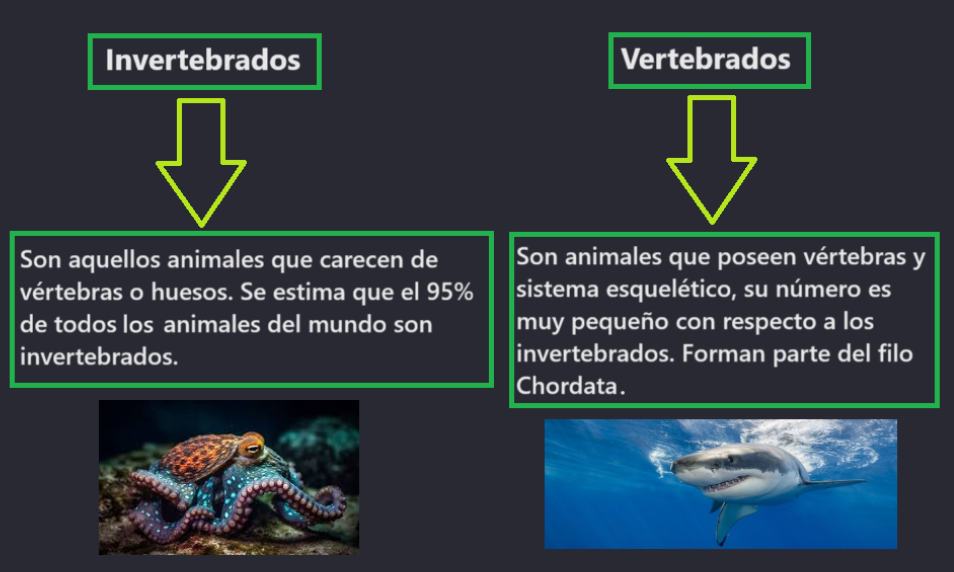

Reino Animalia
El reino Animalia incluye a todas las especies de animales de el mundo. Son organismos pluricelulares, eucariotas y heterótrofos. Tienen reproducción sexual y poseen locomoción. Son organismos muy complejos en cuanto a su morfología y conducta. Actualmente se dice que se conocen tan solo el 20% de todos lo animales. La ciencia que estudia específicamente a este reino es la zoología. Es uno de los reinos más diversos y complejos, además, dentro de el reino Animalia se encuentra el ser humano.
Características del reino Animalia
Son heterótrofos: Los animales no pueden producir sus propios alimentos, por lo que necesitan de otros seres vivos para poder obtener su energía. De acuerdo a su alimentación los animales pueden clasificarse en herbívoros (si consumen plantas), carnívoros(si consumen a otros animales) u omnívoros(si comen de todo tipo de materia orgánica).
Poseen movilidad propia: Algo característico de los animales es que pueden moverse como ellos deseen, y cada animal tiene su propio mecanismo de locomoción, ya se patas, aletas o alas para moverse por tierra, agua o aire. Los animales pueden moverse para buscar mejores condiciones, escapar de una amenaza o para alimentarse. Sin embargo hay animales que no se mueven y se mantienen fijos a algo, como por ejemplo los mejillones, corales y anémonas
Su reproducción: Se reproducen de manera sexual, es decir que se reproducen mediante la copulación de dos organismos (macho y hembra) y la unión de las respectivas células sexuales.
Sus células forman tejidos: Las células animales son capaces de formar tejidos, y a su vez, éstos son capaces de formar órganos. Los órganos forman los sistemas. Los animales cuentan con complejos sistemas de órganos.
Entre sus sistemas están: El sistema nervioso, el cual brinda sensibilidad a los animales,
ello quiere decir que los animales pueden percibir lo que les pasa a su alrededor y también pueden sentir dolor,
esto gracias a laa neuronas y a los nervios que recorren nuestro cuerpo.
El sistema endocrino, el cual regula las hormonas que determinan el metabolismo y comportamiento de los
animales.
El sistema circulatorio, que transporta la sangre, la cual contiene nutrientes y otras sustancias disueltas que
garantizan el correcto funcionamiento de sus órganos.
También poseen otros sistemas, como el digestivo, el respiratorio, el urinario y el reproductor.
Son aeóbicos y su desarrollo es: Los animales necesitan oxígeno para vivir. Los organismos de este reino nacen a través de diversas formas. Los animales ovíparos mediante huevos, los vivíparos a través de una madre, y los ovovivíparos que mantienen los huevos dentro de la madre hasta que nacen.
Clasificación del reino Animalia
Los animales se clasifican según la presencia o ausencia de un sistema esquelético:
Animales invertebrados
Artrópodos
Son los más numerosos de todo el reino animal. Cuentan con un exoesqueleto, apéndices y patas articuladas. Destacan los insectos, arácnidos, miriápodos y los crustáceos.
Moluscos
Son organismos con el cuerpo blando y generalmente protegido por una concha. La mayoría son acuáticos, pero algunos han evolucionado para vivir en hábitats terrestres. Destacan los cefalópodos, gasterópodos y los bivalvos.
Gusanos
Tienen un cuerpo alargado y blando, cubierto de anillos. Generalmente co cuentan con patas articuladas. Destacan los anélidos, nematodos y los platelmintos.
Equinodermos
Son animales marinos, se caracterizan por ser simétricos por un eje central. Su cuerpo parece estar cubierto de espinas o pinchos. Algunos tienen reproducción asexual y su desplazamiento es lento. Destacan las estrellas de mar, los pepinos de mar, los erizos de mar, lirios de mar y ofiuras.
Celentéros
También conocidos como Cnidarios, son animales acuáticos, su cuerpo es blando y translúcido y presentan una simetría radial. Se mueven con las corrientes de agua. Pueden tener tentáculos para defenderse o atrapar a sus presas. Los tentáculos pueden contener sustancias tóxicas. Destacan las medusas y los pólipos.
Poríferos
Poseen un cuerpo poroso, y se les conoce como esponjas. Son los organismos multicelulares más antiguos que existen. Son sésiles y acuáticos. El agua recorre por sus cavidades.
Animales vertebrados
Tejidos animales
Los animales pueden tener muchos sistemas de órganos, por lo que su anatomía no será siempre la misma, pero si tienen los mismos tejidos, los cuales son:
Tejido epitelial: Las células se unen de manera estrecha para tapizar superficies externas y revestir las internas, este tejido también puede formar glándulas por las que se secreten sustancias
Tejido conectivo: Las células se encuentran separadas entre sí por fibras de colágeno, de reticulina y de elastina. El tejido conectivo puede tener varias funciones según su tipo. Los tipos de tejido conectivo son: adiposo, óseo, sanguíneo, cartilaginoso, hematopoyético y linfático.
Tejido muscular: Su función es el movimiento corporal y el cambio de tamaño y forma de los órganos. Está formado por células alargadas. Existen tres tipos: muscular estriado (asociado a los huesos), muscular cardíaco (aparece en el corazón y promueve la circulación sanguínea), y muscular liso (encontrado en las paredes de órganos huecos).
Tejido nervioso: Compuesto por neuronas, que reciben los estímulos de otras, conducen el impulso eléctrico a otros tejidos y almacenan información. Este tejido coordina las funciones del cuerpo, pues el sistema nervioso permite la respuesta a estímulos del ambiente y controla las actividades de órganos y aparatos.

Importancia del reino Animalia
Los animales cumplen una importante función ya que ellos son parte de las cadenas alimenticias, ellos desechan sustancias que los hongos pueden aprovechar para reciclar. Además los animales juegan un importante papel en la vida cotidiana del ser humano, pues muchos de ellos nos brindan alimento y materias primas. La ganadería depende estrictamente de los animales, por lo cual los ganaderos necesitan cuidar sus animales para luego vender los productos que produzcan, como los huevos o la carne. Hay muchos alimentos nutritivos qu provienen de animales, como el pollo, el pescado, el tocino y la miel.